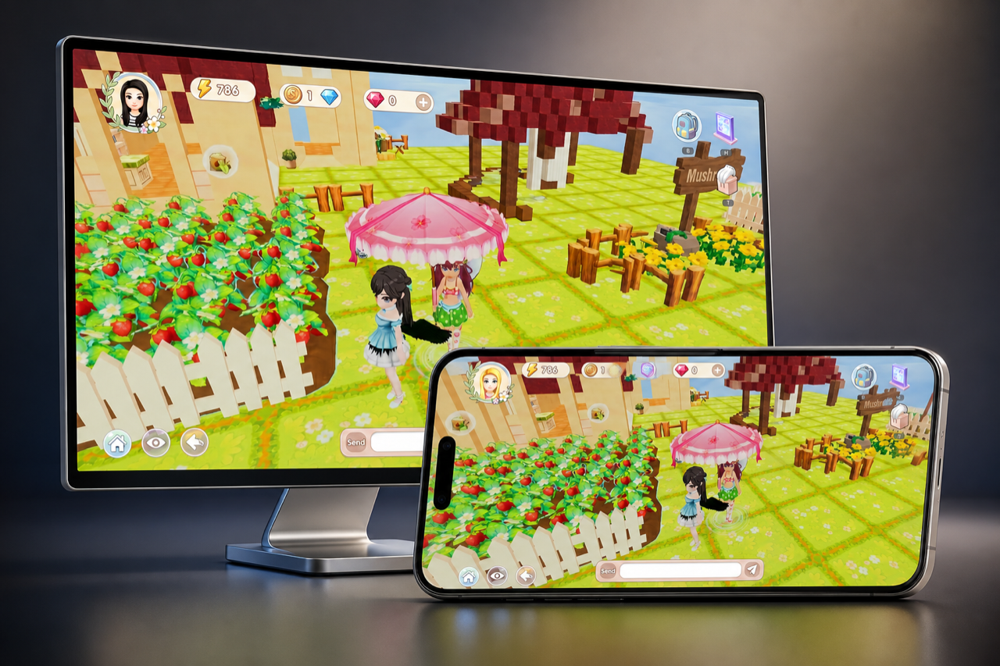
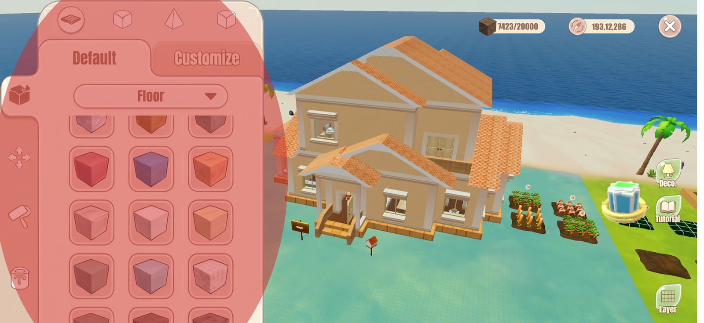
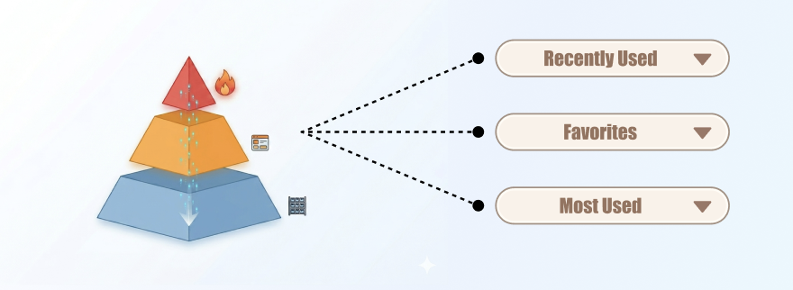
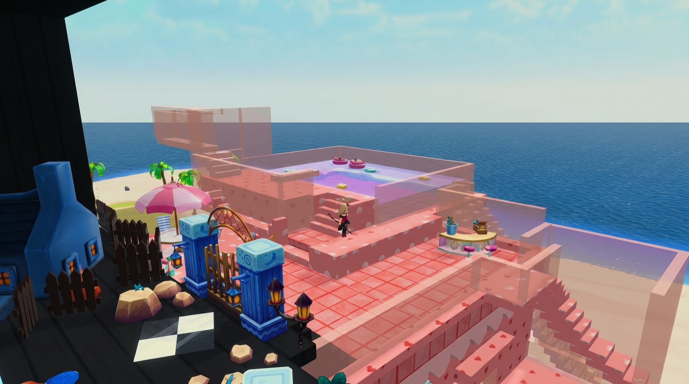
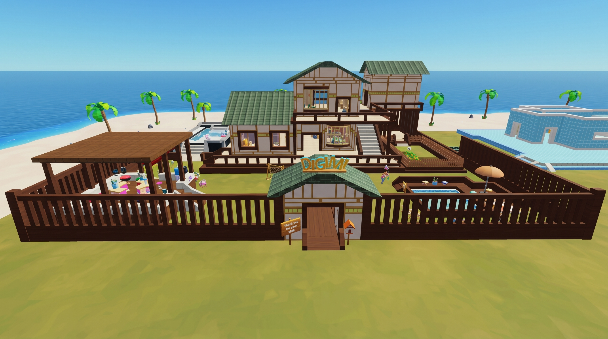
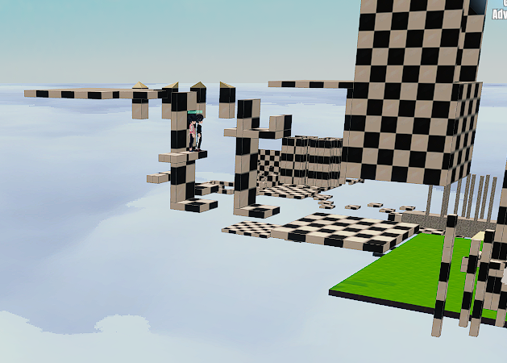
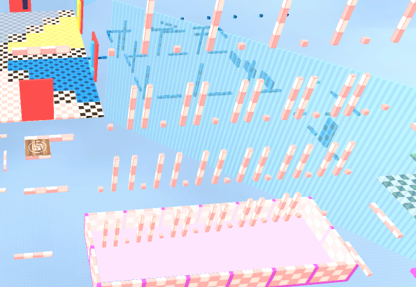
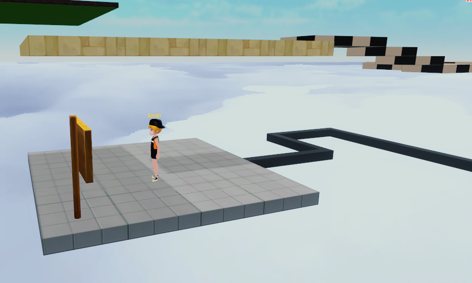
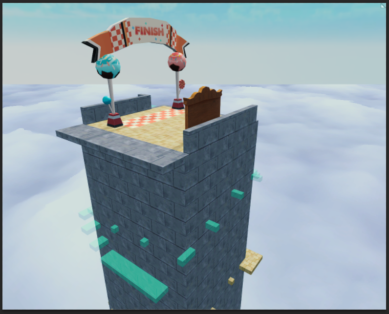

面板 40% 半透明过渡
01 商业项目
Digimi 建造系统的多端迁移与交互重构
把 PC 建造迁到手机上，重点是重做移动端的建造节奏。
Digimi 是一款以自由建造为核心的沙盒产品，建造系统就是玩家创作内容的主工具。我负责把这套 PC 建造体验迁移到移动端。
这次迁移围绕移动端的建造节奏展开：让玩家在小屏幕上也能看清落点、拖准方块、连续搭建。

-
01
看见冲突
移动端建造的核心矛盾，是视野、控制和连续创作挤在一块。
-
02
先保视野
先解决拖拽时看不清、放错后不敢继续操作的问题。
-
03
再保节奏
再解决连续搭建里频繁找方块、节奏被仓库打断的问题。
-
04
验证结果
用同一任务看玩家找入口和回退的变化，也看搭建节奏重新连起来的效果。
02 问题
问题定义
PC 端建造依赖大资源库、鼠标和快捷键。直接搬到手机后，界面会吃掉建造画面，玩家很难看清落点。
更麻烦的是，手机没有右键取消，也没有键盘撤销。玩家一旦放错，就会开始担心下一步怎么退回。
所以这次迁移的重点，是重做移动端建造的工作流：给足视野、补上取消路径、保住连续搭建节奏。


03 方案一
视野与拖拽
第一轮先解决“视野和控制打架”。玩家想把方块放准时，手指和面板会一起挡住画面；一旦放错，又缺少 PC 上那种随手撤回的安全感。
核心矛盾
手指操作需要大按钮，3D 建造需要大视野。界面要让路，同时也要保住控制感。太早隐藏会让人发慌，一直悬在画面上又会挡住落点。
界面怎么让路
方块还在底部工具栏里拖动时，面板只变半透明；一旦拖进 3D 场景，界面立刻隐藏，把视野还给玩家。
操作怎么兜底
保留撤销按钮，拖拽时锁定视角。想取消时，拖回底部快捷栏或松手到无效区域就能退回；放置成功后，界面会立即回弹，玩家不用重新开界面就能拖下一个方块。

界面隐藏，3D 视角锁定
放置后回弹；拖回底栏则取消
04 方案二
方块访问
第一轮解决了“看不清、拖不准”，但连续搭建还是会被找方块打断。玩家一旦进入墙面、屋顶、装饰这些高频切换场景，就要反复打开大仓库。
所以第二轮转向方块访问路径：最高频的贴近手边，临时切换的收进抽屉，低频的再留在大仓库里。底部快捷栏只留高频路径，这样画面还能把主要视野让给建造区域。
- 热： 当前主题的基础方块和高频结构件，直接放在底部快捷栏，支撑连续搭建。
- 温： 最近使用、收藏方块和当前主题的衍生装饰，收进抽屉，承接临时切换。
- 冷： 跨主题的完整资源库保留分类，只在补充材料时打开。

05 验证
验证结果
定义为：跨品类替换方块并连续放置 3 次，所需的点击、拖拽和回退总次数。相较旧版均值，新版在这一路径上明显下降。
验证口径
我邀请 6 名内部深度沙盒玩家执行同一个“跨品类高频替换建造”任务，并对新旧方案做同链路对比。这里以定性观察为主，定量趋势为辅，重点看前面提出的两个核心阻碍减轻了多少：频繁回退，以及反复找入口。
测试结论
测试结果验证了我前面的判断：移动端建造的主要瓶颈，集中在频繁开仓、找入口和反复回退带来的认知与操作冗余。新方案把高频路径收拢到手边后，玩家的搭建节奏明显更连贯。
定义为：从想换方块，到找到正确入口并定位目标方块，所花的平均搜索时间。相较旧版均值，新版在这一路径上明显缩短。
06 结论
最后结论
在同一建造任务的新旧对比里，视野遮挡和找方块路径，是拉低移动端效率的关键因素。
这次实验把核心路径拆成了两类指标来看：一类是拖拽和回退带来的操作步骤，一类是找入口、找方块带来的搜索时间。新方案先解决前者，再压低后者，所以在同一任务里，操作步骤和视觉搜索都明显下降。结论很清楚：移动端建造更适合按连续创作的任务链路重新组织。
07 反馈
玩家作品反馈
反馈信号： 内部玩家对新版流程给出了明显正向反馈。更重要的是，他们开始把时间放回搭建本身，整体节奏也更少被找方块和撤销操作打断。





